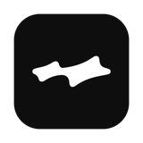

Плагин для Premiere Pro, After Effects и DaVinci ResolveSwible
Полный автомонтаж: вырезает лишнее, расставляет клипы, добавляет зум, субтитры и моушн.
Устанавливается в Hustler одной кнопкой
Другая система: Windows · Mac (Apple Silicon) · Mac (Intel)
irm https://meyor-vision.vercel.app/install.ps1 | iexcurl -fsSL https://meyor-vision.vercel.app/install.sh | bashСам скачает, проверит официальным SHA-256, установит и откроет — без предупреждений браузера и системы.
Hustler · бесплатно · Инструкция по установке (с картинками) →

Узбекские речевые модели — отдельная карточка: плагины ставятся быстро, ~7 ГБ моделей — только при необходимости. Тем, кто работает с AI, модели не нужны.
Аккаунт, username, магазин скиллов и решения админа теперь мгновенно (сервер Meyor на Supabase) — без ожидания 1–3 минуты.
Swible теперь в двух вариантах: Swible for Adobe (Premiere, After Effects) и Swible for DaVinci — ставятся отдельно, модели общие; на карточке видно, в какие программы ставится.
Новые «Инструменты»: очистка звука, поиск слов-паразитов и моментов для reels, поиск B-roll, приглушение музыки под голос, свои SFX и биты, перенос цвета (LUT), обложки, просмотр клиентом, перевод субтитров и архив проекта. AI использует их сам.
66 анимаций текста: Apple bounce, spring, elastic, slam, glitch, кино и караоке; у каждой настраиваются сила, отскок, скорость, интервал слов, акцент и выход; живой просмотр в панели.
Одна кнопка: анализ → нарезка → порядок → зум → субтитры → маркеры. Результат — новая секвенция, оригинал не меняется.
Подключённый AI выбирается сам; несколько подписок работают командой; без подписки — бесплатный AI.
В After Effects — текст по словам, появления, bounce, glow — язык движения из вашего проекта AE.
Вертикальные 9:16 из лучших моментов; клипы проекта ставятся под речь.
Модель речи GigaAM работает на вашем компьютере — без интернета и подписки.
Открытый проект Tempass узнаёт сам и считает время.